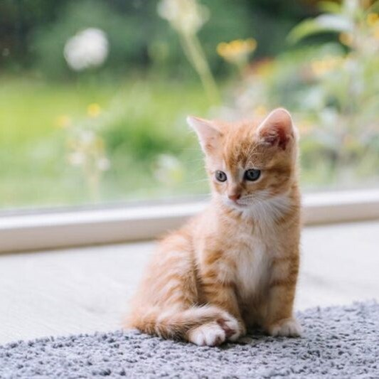

ISMERJ MEG MINKET!
Roszkopf Adél Léna (22)
Mindig is szerettem az állatokat, de a macskák már pici korom óta belopták magukat a szívembe. Jelenleg szoftverfejlesztö -és tesztelőnek tanulok Budapesten, és később ezen a területen is szeretnék elhelyezkedni. A szabadidőmben szeretek nagyokat sétálni a Városligetben, olvasni, vagy hallgatni egy jó hangoskönyvet.

Szalkai Viktória (19)
Mielőtt magához venné a cicát, el kell gondolkodnia azon a kérdésen is, hol tudja azt elszállásolni, ha Ön el utazna, vagy valamilyen más okból nem tudná ellátni az állatot. Ha egy kölyökmacska beszoktatásáról van szó, még időben kezdje el az előkészületeket, hogy a kis állat beköltözése – úgy az Ön, mint a kölyök szempontjából – a lehető legkellemesebb legyen.